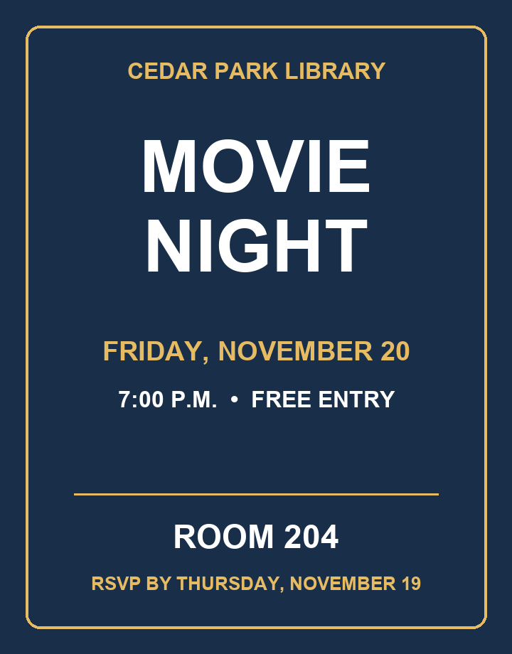
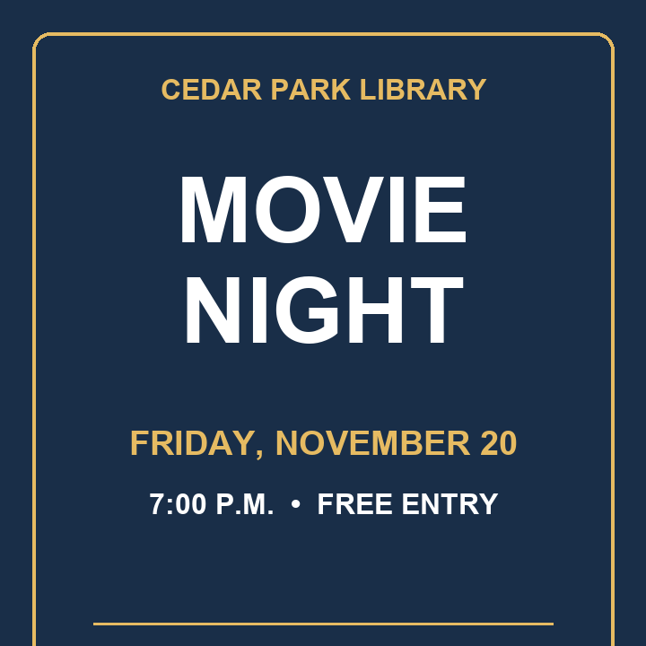

FlyerFix
Check your crop before you post.
FlyerFix helps community organizers check that key event details survive a social media crop. It compares the original flyer with the version you plan to post, flags details that are missing, changed, or hard to read, and drafts a plain-text caption for review.
Crop your own flyer
Choose a format, reposition the crop, and download a PNG. Your image stays in this browser. To check which event details are missing with Muse Spark, use the desktop app.
Try the crop, live
Drag the slider to shrink the crop, or let the animation run. Watch what disappears from the sample flyer first. This is an illustration of the idea — the desktop app checks your actual flyers with Muse Spark.

- 📅 Date — Visible
- 🕖 Time — Visible
- 📍 Room — Visible
- ✉️ RSVP deadline — Visible
Square crop = 78% height. The sample crop keeps the date and time, but cuts the room and the RSVP deadline.
The problem, in one picture
The crop keeps the date and time, but cuts off the room and the RSVP deadline. That is exactly what FlyerFix catches. Both images below are the fictional sample flyers included in the repo.

How it works
- Pick your original flyer and your social crop, or load the included sample.
- FlyerFix resizes large images and sends both JPEGs to the Meta Model API in one chat completion (Muse Spark 1.3).
- You get a crop check (Visible, Missing, Hard to read, Changed), a standalone caption built from the original, and a "Verify before posting" section for anything unclear.
- The organizer reviews the result before posting. Nothing is sent anywhere until you click Compare, and the app never writes your key to disk.
Run it
Python 3.10 or later with Tkinter, plus a Meta Model API key with access to Muse Spark 1.3.
python -m pip install -r requirements.txt
python flyerfix.pyEnter your key in the masked field, or provide it through the MODEL_API_KEY environment variable.